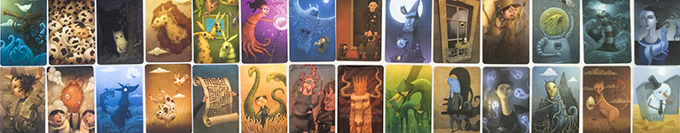
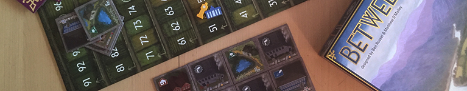
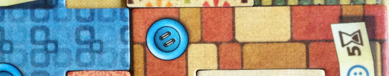
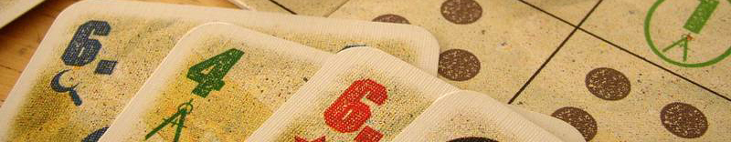
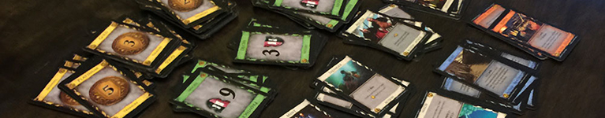
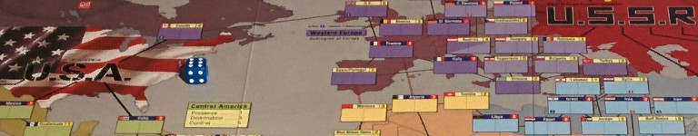

Una volta ero come voi.
Empio, senza guida, vagavo di ludoteca in ludoteca.
Allora, nel mio cuore era solo Monopoli, Risiko!, Cluedo. Nessuna serata passata a giocare da tavolo era soddisfacente, tutto era sempre uguale. Mi chiedevo cosa ne sarebbe stato della mia povera anima, schiacciata sotto il peso del peccato.
Pescavo una carta, lanciavo un dado. Blasfemo, mettevo le banconote sotto la casella del Parcheggio Gratuito. Ed intorno a me era errore e mancanza, ma io non vedevo.
Fino a che un giorno, è apparso Lui.
Nella mano sinistra teneva un regolamento, nella destra una fustella. I Suoi palmi sanguinavano dalle stimmate a forma di dado che ivi contenevano. La fronte sudaticcia era solcata da lunghe rughe d'espressione e ogni cosa di Lui era Paralisi ed Analisi.
In preda all'estasi della Sua Gloria ammutolii, senza sapere cosa dire, o cosa fare.
Quando parlò, la Sua voce era forte e terribile, come mille bicchieri di birra che s'infrangono contro un tabellone già preparato.
Mi disse, tendendo a me la mano fustellata:
“Hai visto la luce? Tu, hai visto la luce?”
Si avvicinò a me farfugliante. La destra toccò la mia fronte.
* E allora vidi, Fratelli. *
Vidi tutte le grandezze occulte del gioco da tavolo. Vidi le meccaniche arcane, le scatole tentatrici, i tabelloni spartani e la sinuosa linea dei Meeple. Vidi le lunghe e intense partite a giochi complessi e tedeschi, che solo avevo potuto sperare esistessero. Vidi la futilità del denaro di fronte alla magnificenza dell'edizione Kickstarter e dell'espansione da due pezzi. Vidi l'Ameritrash e l'Eurogame e l'eterea bellezza dell'Astratto.
Infine, la Sua voce si fece sentire ancora: “Diffondi il mio Verbo”, diceva, “vai e conduci il gregge all'ovile”. Poi, sparì.
Fratelli, quelli che di voi son già fedeli alla Sua Parola, ed hanno assaporato la bellezza del Suo Regno Giocoso, tendano bene l'orecchio, perché possano essere loro volta pastori; tutti gli altri, si radunino e ascoltino bene: nelle parole che dirò sarà loro rivelata la buona novella del gioco da tavolo.

Chi si avvicina alla Fede, Fratelli miei, non lo fa mai con lo stesso spirito del suo prossimo. Ogni fedele lo è per motivi diversi, ogni pecorella ha i suoi gusti e le sue esigenze. Per quanto ovino possa essere un neofita, questo non significa che sia anche una persona che non sa quello che vuole.
Il buon Pastore dovrà tenere questa cosa bene a mente: se il gruppo che intende avvicinare ai giochi da tavolo è omogeneo in quanto a gusti, allora la scelta del gioco da proporre dovrà adeguarsi a loro.
Non è mai una buona idea proporre un gioco alla cieca, specialmente se il gruppo è composto da persone che non si conoscono tra loro. Un missionario che si rispetti dovrà quindi studiare il suo gregge a fondo e sforzarsi di trovare un punto comune tra tutti i suoi componenti.
Molto spesso, gli ovini in questione non avranno molto presente le dinamiche tipiche del gioco da tavolo moderno. È normale. Costretti dall'ignoranza delle grandi catene, non c'è da meravigliarsi se per loro un gioco senza dadi è cosa aliena. Allora forse sarà meglio chiedere loro non se sono più interessati a piazzare lavoratori o a costruire un mazzo, bensì se sono interessati a un gioco ad ambientazione futuristica con grandi complotti da svelare, o a impersonare mercanti di spezie in un lungo viaggio verso l'Oriente. In altre parole, il tema è spesso più importante delle meccaniche.
Se i catecumeni in questione hanno diversi gradi di esperienza e interesse, ma si conoscono bene, un Party Game dall'aria leggera può essere l'ideale. Se non sono particolarmente affiatati, un cooperativo può comunque essere meglio di un competitivo, ed un gioco a squadre meglio di uno in solitario: questo, oltre a creare coesione tra i fedeli, consente di associare i più neofiti ai più esperti, sempre però curandosi di ammonire chi è già iniziato a non trascurare il suo dovere verso i neo-convertiti.
Un buon spunto resta il classico ed onnipresente Dixit, dove ogni giocatore cerca di indovinare quale delle sue carte dalla grafica accattivante corrisponde alla frase criptica che il giocatore di turno avrà associato alla carta da lui prescelta. Le sue meccaniche semplici che non richiedono alcuna passata esperienza nei giochi da tavolo moderni e la sua spontaneità si adattano particolarmente bene a quei gruppi che proprio non sanno da che parte iniziare.

Lasciate che vi sveli la parabola di quello che decise di far proseliti con il suo gestionale di fabbriche di mattoni da tre ore in su: è morto. Solo e senza amici.
Il neofita rifugge l'eccessiva complessità. Anche quando si dice disponibile a gettarsi appieno nella Fede, il suo corpo malabituato ai ritmi ferrei dell'ascetismo ludico estremo lo tradirà. Volenti o nolenti, egli dovrà essere approcciato con qualcosa di sufficientemente contenuto perché egli possa dedicarvi tutta la sua attenzione senza desiderare che finisca. Non dovete dimenticare che non sempre l'agnello sacrificale è consenziente fino a questo punto. Un gioco di breve durata sarà quindi certamente più indicato ai neofiti, non solo perché meno dispendioso delle riserve mentali dei giocatori, ma anche perché di solito si accompagna a meccaniche semplici e concentrate in pochi turni, e dunque più adatte a chi non è abituato a pianificare sul lungo termine.
L'altro vantaggio di un gioco breve è che, proprio non piacesse, può essere agilmente sostituito da un altro, mentre se piace la pecora ne vorrà sicuramente ancora.
Ma il Reverendo del Tavolo deve sapere anche dosare questo principio: così come il mattone da tre ore è troppo complesso, il giochino da cinque minuti rischia di essere troppo poco. Il filler ha la pecca di essere spesso, come suggerisce il nome, un gioco “passatempo” e dunque un'esperienza che rischia di non mostrare al fedele la Vera Beatitudine. Ecco dunque che si necessita il giusto compromesso.
Between Two Cities è un gioco dalle partite brevi, ma non troppo brevi. In esso, i giocatori si improvvisano costruttori di due piccole cittadine, che dovranno progettare rivaleggiando con le creazioni degli altri partecipanti. Tuttavia, non potranno agire liberamente: ciascuna delle sue due città sarà infatti condivisa con il giocatore che ha di fianco, una a destra ed una a sinistra. In questo modo, ogni giocatore dovrà collaborare coi suoi vicini, stando però attento a non avvantaggiarli troppo.

Non sempre un missionario viene inviato tra le comunità più popolose. A volte capita che il suo gregge sia di dimensioni molto contenute, o che si ritrovi a dover insegnare le Vie del Gioco un pagano alla volta. Questo significa che il Pastore dovrà tenere conto del numero di giocatori, visto che non tutti i giochi si adattano bene ad un numero variabile di pecore.
L'appunto è più importante di quel che si creda. Questo perché, in verità vi dico: non tutti i giochi che si possono giocare in un certo numero, si giocano bene in quel certo numero.
La soluzione più semplice in questo caso è racimolare altri fedeli, o presentarsi ad una serata ludica. Se questo però non fosse possibile, è l'esperienza che la deve far da padrona: i decani del gioco sono risorse preziose, che possono essere consultate prima di proporre un gioco che ci è anche familiare, ma che non si è giocato mai nel numero previsto. Lo stesso vale per le comunità della Rete, prima tra tutte Board Game Geek, che spesso annota la giocabilità di un titolo in base al numero di partecipanti.
Ma l'ostacolo più grande per il buon Pastore è quando egli si ritrova a giocare solo con un altro fedele. In questi casi, meglio cercare un gioco appositamente pensato per due: si potrà così evitare di rovinare la prima impressione di un gioco più divertente in gruppi da tre in su e, in generale, di fare la figura del fesso (mi rivolgo in particolare ai missionari che vogliano intrattenere rapporti adulterini con le proprie pecore).
Un gioco da due che è anche un perfetto appiglio per neofiti, date le sue meccaniche semplici e intuitive, è Patchwork, del Divin Uwe Rosenberg. Ciascun giocatore, equipaggiato di una plancia-coperta dovrà cucire ad essa pezzi di stoffa dalle forme più diverse, cercando di incastrarne quanti più possibile nella propria creazione.

E allora bisogna far capire che scacchi, briscola e Scarabeo non esauriscono il mondo dei giochi da tavolo. Non si vive di solo Hasbro, nemmeno da ovini.
I più volenterosi tra i convertiti non avranno problemi a capirlo: messi di fronte alla Verità acquisteranno nuova conoscenza, e si pentiranno del loro passato. Ma non per tutti sarà così.
Alcuni pagani, più ostinati e cocciuti d'altri, non sapranno discostarsi dal loro passato peccaminoso. Vedranno il gioco da tavolo moderno come pericolosa eresia. Certi della loro mentalità oscurantista s'appiglieranno alle loro carte da poker e ai loro dadi usati per muoversi e quanto di troppo diverso vedranno lo additeranno come blasfemo e degno del rogo.
E allora, a tutti voi che soffriranno persecuzioni per la propria Fede io dico: porgete l'altra guancia.
Alle bestie più restie a seguire il bastone del Pastore, dovrà essere data una ragione per avvicinarsi all'Hobby, e non una per allontanarsene.
Fortunatamente, l'Anima del Gioco permea e collega qualsiasi Creazione Ludica, per quanto antica possa essere. Giochi come la dama, il backgammon e perfino la tombola sono stati reinventati per i gusti di oggi. Varrà quindi la pena farne uso.
In Italia quasi tutti hanno giocato a briscola. Quindi, quasi tutti non avranno difficoltà a capire un gioco come Nyet!, che proprio queste meccaniche impiega, aggiungendovi però una veste grafica fresca e cartoonesca, oltre che a una dinamica di “puntate preliminari” intuitiva e che rende il gioco più avvincente.

Che razza di Pastore è colui che non conosce la Verità? La sua pecora, dubbiosa per natura, fiuterà sicuramente la mancanza di Fede del suo duce che si ferma a ripassare il regolamento mentre fa proseliti.
Questa è grande eresia, perché fa credere che l'Hobby sia solo inutilmente complicato e riservato a pochi ostinati eletti.
Ecco perché il gioco va conosciuto bene, ed è meglio sia stato masticato a sufficienza da chi lo propone. Un gioco giocato una sola volta non va bene. Un gioco mai giocato, ancora meno.
Voi giovani che aspirate alla toga talare del sacerdozio ludico dovete fare vostro ogni gioco che volete proporre. Deve essere chiaro a voi prima che agli altri, perché sarete voi a doverlo spiegare al popolo ignorante.
Ma se proprio nulla di vostro vi risulta così famigliare da essere spiegato senza riferirsi sempre alle mille eccezioni del vostro manuale, o se la vostra memoria è manchevole, allora forse vi farà bene procurarvi qualche gioco immediatamente intuitivo, come l'antenato di tutti i deck building: Dominion. Il gioco, che nel 2018 compirà dieci anni, vi metterà nei panni di monarchi in competizione per creare un regno potente e ricco attraverso l'uso di carte i cui effetti sono da loro stesse illustrati. Vi basterà imparare poche semplici regole di cornice, e tutto il resto si spiegherà da sé.

Benedetto sia colui che in nome della carità e della buona volontà conduce i deboli attraverso la valle delle tenebre, perché egli in verità è il pastore di suo fratello e il ricercatore dei figli smarriti.
Dura è la sua missione, poiché egli non opera per il bene di sé, ma per il bene del suo gregge, per condurlo sulla retta via.
Mai dunque dovrà egli imporre i propri gusti agli altri fedeli, perché ciascuno di essi cerca una strada sua, forse anche molto diversa da quella del suo Pastore.
Vi dico quindi: lasciate da parte le vostre passioni, specie se particolarmente esotiche, e concentratevi su quelle del Prossimo vostro. Il vostro gioco preferito tiratelo fuori solo quando sarà il momento, ed altrimenti commetterete grave peccato. Perché ricordate: la strada per l'Inferno è lastricata di buone intenzioni.
A meno che non giochiate a Twilight Struggle. Twilight Struggle è sempre bellissimo.
Sempre.
Se non siete d'accordo, andatevene al diavolo.